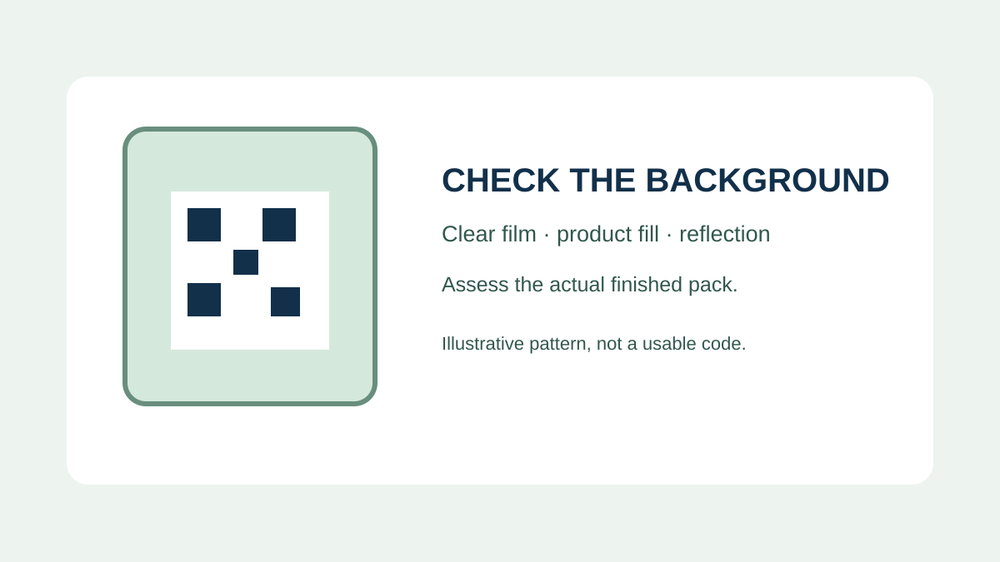
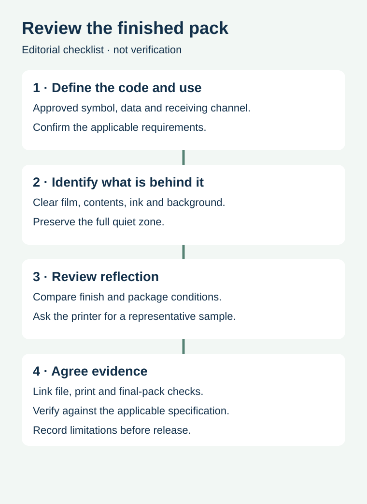

A QR code appears black and white on a designer's screen. On the finished pack, its background might be clear film over dark coffee, glossy laminate under store lighting, or a white ink layer whose opacity differs from the proof. The code's size and encoded data matter, but the surface behind and above it is part of the purchasing decision too.
Review the approved symbol on the actual construction and filled package, then agree the required verification and workflow checks with the code owner, printer and receiving partner. A phone opening a link once does not prove checkout performance or formal compliance.

First identify the scanning job
A code for consumer information, a retail point-of-sale code and a production traceability mark can have different data, symbol and acceptance requirements. Record who owns the encoded data and what equipment or trading partner must read it. Do not assume that all QR-like graphics are interchangeable or that every retail system can process the same 2D data.
GS1's 2D retail guideline discusses contrast, packaging materials, sheen and the intended scan environment. Its recommendations should be interpreted for the actual symbol and application; a decorative square in an illustration is not an approved production file.
Clear is not a white background


On transparent or translucent film, product color and irregular contents can show through behind a code. A proof displayed on a white screen can conceal that effect. Ask the printer to identify the printed background and any white-ink layer, its intended coverage and its relationship to the barcode and quiet zone. A background that looks white on one sample may need a separate assessment on another fill or package construction.
GS1's 2D barcode colour and quality guide discusses an opaque light background on transparent packaging and identifies reflective surfaces as a reading concern. Follow the applicable code specification and evaluate a representative production construction; the guide does not prove that a particular printer or material meets the required grade.
Gloss and glare are not the same as print contrast
A printed code can have visible dark and light areas and still interact poorly with an imaging scanner if a shiny surface sends glare toward the reader. Conversely, replacing an entire premium finish just because a phone struggled under one light may be an expensive and unproven reaction. Ask what scanner, lighting, angle, package and finish were involved. Compare a representative finished label and package through the receiving channel's agreed test process.
If a local matte or opaque region is proposed, the printer should confirm how it is produced, how its boundary protects the complete symbol and quiet zone, and how it interacts with other finishes. A flat artwork file, a soft proof and a finished filled package provide different evidence. Do not claim a coating has solved the problem before checking the relevant output.
| Layer or condition | Question to record | Evidence to request |
|---|---|---|
| Symbol and data | Which approved code serves which scan job? | Versioned production file and data ownership |
| Background | Can product or container color show through? | Actual material, white layer and filled-pack sample |
| Finish | Could gloss, foil or overwrap change the view? | Representative finished construction |
| Placement | Are the complete symbol and quiet zone unobstructed? | Final-size layout and assembled pack |
| Acceptance | Which checks and criteria apply to the destination? | Traceable verification and workflow results |
Compare like with like
Suppose a hypothetical snack brand compares a clear pouch filled with a pale product against an empty sample. The two can present different backgrounds behind the symbol. A useful comparison records the actual fill, packaging film, printed white layer, code artwork, finish and test method. If several variables change at once, a different outcome cannot identify which change caused it.
Keep the same versioned code and note any necessary differences. The parties can then agree whether to test an alternative background, finish or placement, with production and acceptance owners involved. Record both successful and failed observations and any missing conditions. Do not extrapolate a single test to every future product color or printer run.
Keep verification attached to the correct revision
Data approval confirms what is encoded. Print verification examines a symbol using the applicable method and criteria. Final-package and workflow checks address whether the assembled product is presented and read as intended. Ask a qualified verification provider what can be tested on the actual package and how the report identifies the artwork, sample and production lot.
The verification versus scanning guide explains the distinction. The QR layout guide covers space around a QR symbol; its QR-specific rules must not be transferred automatically to other 2D symbols. The finish comparison guide helps frame the broader surface decision.
Provide the actual package and code details
Share the approved symbol file, scan purpose, intended market and receiving requirements, clear or reflective substrate, product fill, background and finish. Prepare a label specification inquiry; the contact page opens an email draft and lists email or WhatsApp for attachments. Testing services and material capabilities require confirmation.